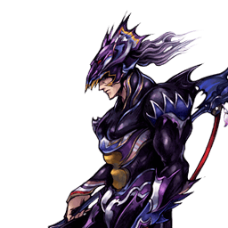
Final Fantasy IV
Kain Highwind
Chasseur aérien défensif : mobilité verticale, punish et combos explosifs
Position dans la méta
Tier B 17ᵉ sur 30 — tier list tournoi 2017 de dissidia.wiki (moitié valeurs de matchups, moitié avis de joueurs experts).
Vue d'ensemble
Kain est un combattant aérien de courte portée doté d'une mobilité verticale exceptionnelle. Il dispose d'un air dash homing unique, exécutable après ses braveries de mêlée. Sa défense aérienne est de tout premier ordre : ses air jumps et ses Precision Jumps sont parmi les meilleurs du jeu, et sa fall speed rapide rend ses air dodges très sûrs. Ses attaques aériennes sortent vite et couvrent bien les angles diagonaux, ce qui sert idéalement un style orienté punish défensif.
Quand Kain touche, il peut modifier la direction du knockback grâce à ses follow-ups directionnels, et convertir via des solo combos peu nombreux mais très rentables. Son wall carry est excellent grâce aux loops de Lance Barrage et à ses HP attacks aériennes dévastatrices. Malgré une ATK de base moyenne, ses dégâts réels sont bien supérieurs en pratique : combos, coups critiques et forte base damage sur ses coups à Wall Rush comme Rising Drive et Sky Rave. Au sol, il contrôle l'espace aérien avec son emblématique Jump et peut ralentir le rythme à tout moment.
Ses limites tiennent à une offense sans réel point fort : ses braveries aériennes ne sont pas de premier plan pour le rushdown. Il peut poke, mais tous ses coups sont un peu plus lents que la moyenne, Kain ne se déplace pas pendant leur startup et leur tracking est linéaire dans une seule direction. Sa recovery relativement lente l'expose au whiff punish à courte portée. Il dépend donc de timing mixups pour ne pas être bloqué, et ne peut pas toujours arrêter les déplacements rapides. Ses rares projectiles sont télégraphiés ou risqués pour poke à travers les pièges, comme le Knight's Lance chargé d'Ultimecia ou le Thunder Crest de The Emperor.
En compétition, Kain est généralement classé en mid tier. Son style défensif fonctionne de façon fiable contre une grande variété de personnages : il évite bien les dégâts en l'air et peut passer en force avec des Jumps chargés au sol. Explosif dès qu'il place un combo propre, il peine toutefois à forcer des ouvertures contre les adversaires défensifs, et son remplissage de jauge d'assist est un peu lent — surtout en petite arène sous pression. Dans un jeu où le jeu défensif est roi, Kain reste un personnage compétent, au moveset assez direct et aux dégâts élevés.
Forces
- Défense aérienne de premier ordre : air jumps et Precision Jumps excellents, fall speed rapide qui sécurise les air dodges.
- Attaques aériennes rapides couvrant bien les diagonales, parfaites pour un jeu de punish.
- Air dash homing unique après les braveries de mêlée (Air Dash Cancel).
- Wall carry élevé via les loops de Lance Barrage et des HP aériens très puissants (Rising Drive, Sky Rave).
- Dégâts pratiques bien supérieurs à son ATK de base moyenne grâce aux combos, aux critiques et à la forte base damage de ses coups à Wall Rush.
- Jump contrôle l'espace aérien depuis le sol et ralentit le rythme à la demande, avec de l'invincibilité en montée.
Faiblesses
- Braveries aériennes en deçà des meilleures pour le rushdown : startup plus lent, aucun déplacement pendant le startup, tracking linéaire.
- Recovery relativement lente : vulnérable au whiff punish à courte portée.
- Dépend de timing mixups pour éviter le block et ne stoppe pas toujours les déplacements rapides.
- Peu de projectiles, tous télégraphiés ou risqués face aux pièges (Knight's Lance chargé d'Ultimecia, Thunder Crest de The Emperor).
- Peine à forcer des ouvertures contre les adversaires défensifs.
- Remplissage de jauge d'assist un peu lent, problématique surtout en petite arène sous pression.
Stats & vitesses
| Nom | Kain Highwind (カイン・ハイウインド) |
|---|---|
| Jeu d'origine | Final Fantasy IV |
| ATK de base (LV100) | 110 (Average) |
| DEF de base (LV100) | 111 (Average) |
| Vitesse de course | 8 (Below Average) |
| Vitesse de dash | 81 (Below Average) |
| Vitesse de chute | 67 (Fast) |
| Chute après esquive | 16 (Very Fast) |
| BRV la plus rapide | 19F (Spiral Blow, Lance Barrage) |
| HP la plus rapide | 41F (Dragon's Fang) |
| HP en 1 coup | Dragon's Fang, Lancet |
| HP links | Yes (Combos only) |
| Command block | No |
| Armes | Daggers, Greatswords, Katanas, Spears, Swords |
| Armures | Shields, Gauntlets, Large Shields,Helms, Light Armor, Heavy Armor |
| Armes exclusives | Black Dragon Spear, Holy Dragon Spear,Abel's Lance, Highwind |
| Unlock | Default |
| Camp | Cosmos |
| Doubleur (JP) | Koichi Yamadera |
| Doubleur (ENG) | Liam O'Brien |
Point or : ce personnage · petits points : le reste du cast · trait violet : moyenne. Valeurs du wiki, plus bas = plus rapide ; le rang à droite se lit directement (1ᵉʳ = le plus rapide).
Coups
Barre plus courte = coup plus rapide. Startup en frames (60 i/s, données dissidia.wiki), priorité indiquée après la valeur. Les coups marqués ★ sont les plus rapides du kit — ce sont en général vos meilleurs outils de punish et de pression.
Braveries
Au sol
Spiral Blow Melee Low
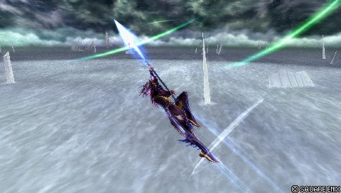
Poke ou outil de punish occasionnel près des murs : startup relativement rapide (19F) et angle vertical bas, bon pour toucher devant Kain, avec une base damage correcte et un knockback moyen vers le Wall Rush — ce qui en fait aussi un starter de combo assist. Kain devient airborne en l'utilisant, donc pas de répétition au sol ; c'est l'un de ses coups au sol les plus sûrs à whiff, mais peu rentable sans Wall Rush ni assist.
| Dégâts de base | 20 |
|---|---|
| Startup | 19F |
| Type | Physical |
| Priorité | Melee Low |
| EX Force | 0 |
| Effets | Wall Rush |
| Cancels | Dodge |
| CP (maîtrisé) | 30 (15) |
Lance Burst Melee Low
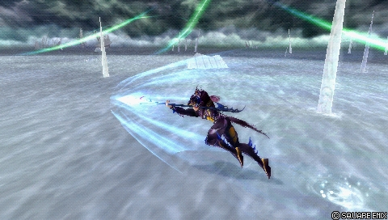
Sa bravery au sol la plus puissante, dédiée aux punishs contre block ou dodge. Base damage au-dessus de la moyenne et départs de combo partout : assist après le coup d'estoc, ou dodge cancel > Lance Barrage en solo — deux routes pratiques souvent équipées en compétitif. Le coup avance et reste actif tant que Kain bouge (assez pour punir un ground dodge après un dash), mais son startup est réactable et il ne peut pas anti-air.
| Dégâts de base | 32 (2 x 6, 5, 15) |
|---|---|
| Startup | 29F |
| Type | Physical |
| Priorité | Melee Low |
| EX Force | 90 |
| Effets | Chase |
| Cancels | Dodge |
| CP (maîtrisé) | 30 (15) |
Cyclone (ground) Ranged Low
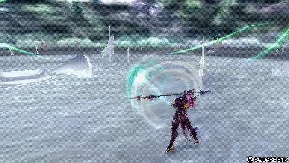
Projectile homing utilisé avec parcimonie au sol : sur hit, il aspire l'adversaire et son hit stun permet de combotter en HP, notamment Rising Drive, depuis la mi-distance — timing strict, car Kain n'est airborne qu'un très bref instant après la recovery. Peu adapté au contrôle d'espace : priorité basse, startup lent (35F) et Kain reste immobile après le cast, ce qui perd contre les homing dashes.
| Dégâts de base | 10 |
|---|---|
| Startup | 35F |
| Type | Physical |
| Priorité | Ranged Low |
| EX Force | 0 |
| CP (maîtrisé) | 30 (15) |
En l’air
Lance Barrage Melee Low
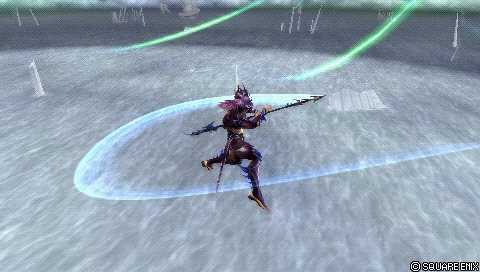
Le poke principal de Kain : il avance pendant le coup, ce qui en fait l'outil de référence pour toucher devant lui et punir à courte portée (whiff, block stagger, block manqué). Sur hit, appel d'assist ou follow-up directionnel : Up Follow-up (90 EX) alimente son loop solo midscreen — techniquement infini, limité à deux répétitions en compétitif — avec fin en Neutral Follow-up au mur pour le Wall Rush ; Down Follow-up confirme les combos assist au sol. Relativement sûr en neutral grâce au dodge cancel et à sa fall speed, mais whiff punissable et sujet à rater les cibles mobiles puisque Kain s'arrête au startup.
| Normal + Neutral | Normal + Up / Down | |
|---|---|---|
| Dégâts de base | 35 (7, 8 + 2 x 4, 12) | 30 (7, 8 + 15) |
| Startup | 19F | 19F |
| Type | Physical | Physical |
| Priorité | Melee Low | Melee Low |
| EX Force | 30 | 90 |
| Effets | Wall Rush | Chase |
| Cancels | Dodge | Dodge |
| CP (maîtrisé) | 30 (15) |
Celestial Shooter Melee Low
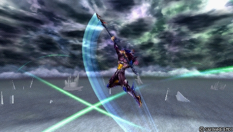
Attaque dédiée vers le haut : sert à construire la jauge d'assist sur whiff et à punir les adversaires au-dessus de Kain. Légèrement plus lent que Lance Barrage (21F) mais le déplacement diagonal qui suit contribue à sa portée et à sa sécurité en neutral. Up Follow-up peut Wall Rush près des plafonds pour lancer les combos assist ; angle mort juste au-dessus de Kain et trajectoire unique, d'où l'importance des timing mixups.
| Normal + Up | Normal + Neutral / Down | |
|---|---|---|
| Dégâts de base | 40 (2 x 4, 7 + 4, 4, 5, 12) | 30 (2 x 4, 7, 15) |
| Startup | 21F | 21F |
| Type | Physical | Physical |
| Priorité | Melee Low | Melee Low |
| EX Force | 30 | 90 |
| Effets | Wall Rush | Chase |
| Cancels | Dodge | |
| CP (maîtrisé) | 30 (15) |
Crashing Dive Melee Low
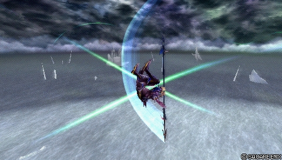
Attaque dédiée vers le bas, miroir de Celestial Shooter : jauge d'assist sur whiff, punish des adversaires en dessous et approche occasionnelle des adversaires au sol grâce à sa distance de déplacement, en mixup avec dash feints et autres braveries près du sol. Sur hit : Wall Rush au sol et combo strict en dodge cancel vers Lance Barrage ; le Up Follow-up (90 EX) ouvre une route très rentable indépendante des murs. Ne voyage que dans une direction, timing mixups indispensables.
| Normal + Down | Normal + Up / Neutral | |
|---|---|---|
| Dégâts de base | 40 (1 x 7, 8 + 1 x 7, 6, 12) | 30 (1 x 7, 8 + 15) |
| Startup | 21F | 21F |
| Type | Physical | Physical |
| Priorité | Melee Low | Melee Low |
| EX Force | 30 | 90 |
| Effets | Wall Rush | Chase |
| Cancels | Dodge | Dodge |
| CP (maîtrisé) | 30 (15) |
Cyclone (midair) Ranged Low
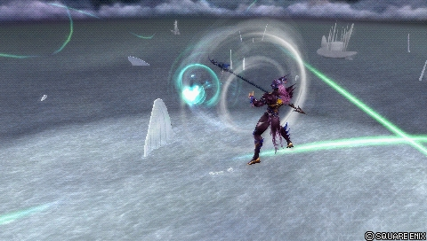
Quasi identique à la version au sol : poke de mi-distance occasionnel et outil de setup en combo assist, capable de combotter dans un second Cyclone à mi/longue distance. Peu utilisé en compétitif : trop lent pour zoner, récompense faible sans positionnement précis, et il sacrifie la couverture verticale de Celestial Shooter ou Crashing Dive.
| Dégâts de base | 10 |
|---|---|
| Startup | 35F |
| Type | Physical |
| Priorité | Ranged Low |
| EX Force | 0 |
| CP (maîtrisé) | 30 (15) |
Attaques HP
Au sol
Jump Melee High
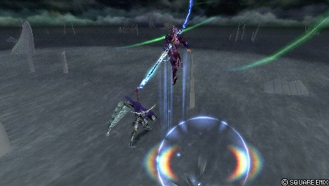
Outil défensif flexible et indispensable : attaque d'urgence après un ground dodge grâce à son invincibilité (LV1), contrôle d'espace en version chargée (LV2/LV3) avec hitbox montante qui écrase les guards et garantit le hit HP. Le dodge cancel à l'apex (LV2/LV3) permet de charger en évaluant la situation avec très peu de risque, et ouvre des solo combos si l'adversaire est à hauteur maximale. Revers : le LV1 force l'atterrissage (punissable sans assist), un Jump chargé ne force pas l'approche (l'adversaire peut remplir sa jauge à distance), il perd contre le halo camp, et sa hauteur max n'atteint pas le plafond des grandes arènes — les stages à plafond bas comme Pandaemonium - Top Floor et M. S. Prima Vista jouent en sa faveur. Techniquement vulnérable aux checkmates EX Revenge car il inflige des dégâts bravery à la descente.
| Dégâts de base | 2 x N |
|---|---|
| Startup | See table below |
| Type | Physical |
| Priorité | Melee High |
| EX Force | 3 each |
| Effets | Wall Rush |
| Cancels | Dodge (Landing) |
| CP (maîtrisé) | 40 (20) |
Jump's frame data
Coup sans nom
| Version | Startup / charge time | Max charge time = 180F | Liftoff | Peak | Landing |
|---|---|---|---|---|---|
| LV1 | 8F | After button release | 7F | 23F~41F | 51F |
| LV2 | 32F | After button release | 9F | 27F~49F | 67F |
| LV3 | 62F | After button release | 9F | 31F~57F | 79F |
Dragon's Fang Melee High
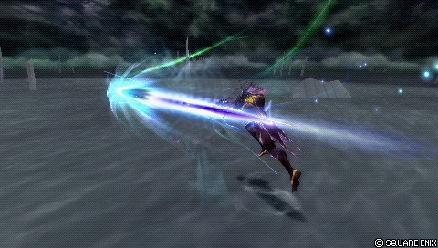
Le HP mono-hit de Kain et son HP le plus rapide (41F), typiquement utilisé après un block stagger, avec un bon tracking vertical mais une allonge courte — gare aux disjoints bloqués à distance. La version au sol est peu utilisée vu la faiblesse du jeu au sol de Kain hors Jumps chargés.
| Startup | 41F |
|---|---|
| Priorité | Melee High |
| EX Force | 0 |
| Effets | Wall Rush |
| Cancels | Dodge |
| CP (maîtrisé) | 30 (15) |
En l’air
Rising Drive Melee High
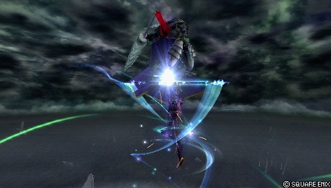
HP aérien montant (49F) qui vrille jusqu'au plafond, à Wall Rush et forte base damage : c'est la conclusion privilégiée des combos assist, notamment après Cyclone ou le Wall Rush de Crashing Dive.
| Dégâts de base | 64 (2 x 32) |
|---|---|
| Startup | 49F |
| Type | Physical |
| Priorité | Melee High |
| EX Force | 30 |
| Effets | Wall Rush |
| Cancels | Dodge |
| CP (maîtrisé) | 30 (15) |
Sky Rave Melee High
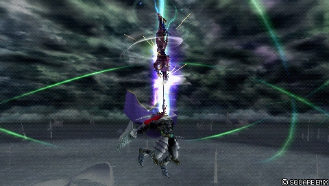
HP aérien plongeant (49F) jusqu'au sol, à Wall Rush : avec Rising Drive, c'est l'un des coups à forte base damage qui gonflent les dégâts réels de Kain.
| Dégâts de base | 74 (2 x 37) |
|---|---|
| Startup | 49F |
| Type | Physical |
| Priorité | Melee High |
| EX Force | 30 |
| Effets | Wall Rush |
| Cancels | Dodge |
| CP (maîtrisé) | 30 (15) |
Dragon's Fang (midair) Melee High
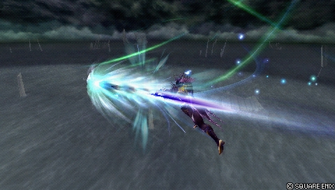
Fonctionnellement identique à la version au sol, mais remplit le rôle de HP mono-hit de façon plus fiable en l'air.
| Startup | 41F |
|---|---|
| Priorité | Melee High |
| EX Force | 0 |
| Effets | Wall Rush |
| Cancels | Dodge |
| CP (maîtrisé) | 30 (15) |
Gungnir Ranged High
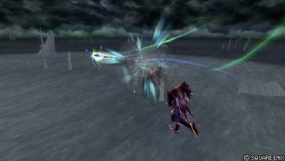
Lance d'énergie projetée (55F, Ranged High) qui vole jusqu'à toucher le décor, avec Wall Rush.
| Dégâts de base | 60 (2 x 30) |
|---|---|
| Startup | 55F |
| Type | Physical |
| Priorité | Ranged High |
| EX Force | 30 |
| Effets | Wall Rush |
| Cancels | Dodge |
| CP (maîtrisé) | 30 (15) |
EX Mode: Holy Strength! & EX Burst
EX Mode « Holy Strength! » : Kain gagne Regen, Critical Boost et Lancet.
Lancet (activation R + Carré, 51F, priorité Ranged High) : les dégâts infligés sont absorbés en HP et la bravery dépensée est immédiatement récupérée. L'action est annulable en Dodge ou en Air Dash et déclenche l'EX Burst.
EX Burst : « Dragoon's Pride », l'ultime saut de dragoon : martelez la commande affichée à l'écran pour monter la jauge, la commande change deux fois au hasard. Base damage de 30 en phase initiale et 100 au total (Physical).
Mécanique unique
Air Dash Cancel : quand Kain termine une bravery de mêlée, il peut la cancel en air dash homing en pressant Triangle. L'application principale est de remplir la jauge d'assist avec l'ability Assist Gauge Up Dash tout en approchant l'adversaire — utile pour optimiser les starters de combos assist au sol, mais peu employé ailleurs. Le dash et le startup relativement lent des braveries aériennes de Kain n'ouvrent pas de routes de solo combo.
- La mécanique est intégrée : aucune ability de dash à équiper.
- Kain exécute l'air dash même si Triangle est maintenu à l'avance : en pratique, cela fonctionne comme un input buffer, chose rare dans Dissidia 012.
Plan de jeu & techniques avancées
La boucle de jeu de Kain est défensive et aérienne : alterner Lance Barrage, Celestial Shooter et Crashing Dive pour rester en mouvement tout en construisant la jauge d'assist sur whiff, couvrir les trois axes (devant, dessus, dessous) et punir tout ce qui whiff ou récupère lentement. Sa fall speed rend ses air dodges (surtout arrière) plus sûrs que la moyenne, ce qui sécurise les dodge cancels après ses pokes.
Sur hit, tout converge vers le wall carry et le Wall Rush : Up Follow-up de Lance Barrage pour le loop solo midscreen (deux répétitions autorisées en compétitif, gros gains d'EX et de wall carry), Neutral Follow-up au mur pour le Wall Rush, Down Follow-ups pour confirmer les combos assist au sol, et Rising Drive ou Sky Rave en conclusion pour des dégâts massifs. L'Air Dash Cancel permet de grappiller un peu de jauge d'assist avant la confirmation.
Au sol, Kain est médiocre en combat direct : Lance Burst sert de punish dédié, mais le réflexe par défaut reste le Jump chargé — sûr grâce au dodge cancel à l'apex, il écrase les guards, contrôle l'espace et ralentit le rythme. Attention toutefois : charger Jump laisse l'adversaire remplir sa jauge à distance, ce qui peut coûter la course à l'assist.
La gestion des jauges est le point de friction : le remplissage d'assist de Kain est un peu lent, surtout en petite arène sous pression. Les notes de coups soulignent la valeur des assists Kuja (combos en corner via Up Follow-up) et Aerith (conversions via Chase après les follow-ups) pour rentabiliser chaque touche.
Techniques spécifiques
Lance Barrage loop (Up Follow-up)
Le Up Follow-up ne Wall Rush pas mais génère 90 EX, ce qui permet de dodge cancel puis de replacer un Lance Barrage : combo solo midscreen principal de Kain, techniquement infini. Le timing est assez strict, mais chaque répétition rapporte wall carry et jauge d'assist ; en compétitif, deux Lance Barrages sont toujours autorisés, avec Neutral Follow-up près du mur pour conclure en Wall Rush.
Jump dodge cancel
En chargeant Jump (LV2/LV3), Kain peut air dodge à l'apex du saut : il menace, observe et se repositionne avec très peu de risque. Sortir du Jump en dodge ouvre aussi des solo combos si l'adversaire se trouve à la hauteur maximale du saut.
Lance Burst dodge cancel combo
Après le coup d'estoc de Lance Burst, un dodge cancel vers Lance Barrage lance un combo solo depuis le sol — l'une des deux routes (avec l'appel d'assist) qui rendent ce coup si équipé en compétitif.
Cyclone > Rising Drive
Le hit stun de Cyclone permet de combotter en HP depuis la mi-distance, notamment Rising Drive. Fenêtre stricte : Kain n'est considéré airborne qu'un très court instant après la recovery, et redevient grounded s'il n'agit pas au bon timing.
Techniques universelles (blodge, dash feint, lock off, dodge punishment) : voir la page Techniques & glitches.
Matchups
La page matchups du wiki est une ébauche, mais l'overview livre quelques repères : le style défensif de Kain fonctionne de façon fiable contre une grande variété de personnages, alors qu'il peine contre les adversaires défensifs qui ne lui donnent rien à punir. Ses projectiles télégraphiés rendent risqué le poke à travers les pièges d'Ultimecia (Knight's Lance chargé) ou de The Emperor (Thunder Crest). Enfin, Jump perd de son efficacité contre le halo camp et dans les grandes arènes, tandis que les stages à plafond bas (Pandaemonium - Top Floor, M. S. Prima Vista) tournent à son avantage.
Vidéos de matchs : Replay Theater — matchs de Kain Highwind.
Builds
Deux builds sont documentés, tous deux en 450 CP avec l'Equip Glitch (le coût total suppose le glitch), l'effet spécial Seal of Lufenia et l'invocation Rubicante.
« Side by Side (Damage) » : un build à hauts dégâts misant sur les dégâts bravery et le Wall Rush, pensé pour les petites arènes à plafond bas. Le booster maximal de x7.4 s'active avec Large Gap in HP et BRV = 0 réunis (x5.3 avec Large Gap in HP seul).
« Hybrid (EX) » : des dégâts sans sacrifier l'absorption d'EX, recommandé pour les arènes moyennes à grandes, avec un booster de x2.3 avant l'activation de Large Gap in HP.
| Stats | |
|---|---|
| HP | 9971 |
| CP | 450 |
| BRV | 957 |
| ATK | 181 |
| DEF | 182 |
| LUK | 60 |
| Max Booster | x7.4 |
| Equipment | |
|---|---|
| Assist | Player Choice |
| Weapon | Highwind |
| Hand | Lufenian Dirk |
| Head | Lufenian Headband |
| Body | Lufenian Vest |
| Accessory 1 | Hyper Ring |
| Accessory 2 | Muscle Belt |
| Accessory 3 | Sniper Eye |
| Accessory 4 | Large Gap in HP |
| Accessory 5 | BRV = 0 |
| Accessory 6 | Empty EX Gauge |
| Accessory 7 | Summon Unused |
| Accessory 8 | Pre-EX Mode |
| Accessory 9 | Pre-EX Revenge |
| Accessory 10 | Side by Side |
| Summon | Rubicante |
| Bravery attacks | |
|---|---|
| Ground | Aerial |
| HP attacks | |
| Ground | Aerial |
| Stats | |
|---|---|
| HP | 9644 |
| CP | 450 |
| BRV | 1075 |
| ATK | 68 |
| DEF | 71 |
| LUK | 60 |
| Max Booster | x3.5 |
| Equipment | |
|---|---|
| Assist | Player Choice |
| Weapon | Heaven's Cloud |
| Hand | Lufenian Dirk |
| Head | Lufenian Hairpin |
| Body | Lufenian Vest |
| Accessory 1 | Muscle Belt |
| Accessory 2 | Sniper Eye |
| Accessory 3 | Dismay Shock |
| Accessory 4 | Large Gap in HP |
| Accessory 5 | Summon Unused |
| Accessory 6 | Pre-EX Mode |
| Accessory 7 | Pre-EX Revenge |
| Accessory 8 | Tenacious Attacker |
| Accessory 9 | Glutton |
| Accessory 10 | First to Victory |
| Summon | Rubicante |
| Bravery attacks | |
|---|---|
| Ground | Aerial |
| HP attacks | |
| Ground | Aerial |
Substituts documentés : sur le build dégâts, Hyper Ring peut céder sa place à Battle Hammer (drain d'assist) ou Dismay Shock (drain d'EX renforcé). Sur le build EX, préférez la Cleaver si vous jouez l'assist Aerith ; Heaven's Cloud convient si vous maîtrisez ses loops de braveries aériennes en corner.
Synergies d'assist
Kain Highwind en tant qu'assist
Kain est classé Mid dans la tier list assist de Muggshotter. Ses coups d'assist : Lance Burst en BRV au sol (29F, Chase), Crashing Dive en BRV aérien (21F, Wall Rush), Jump en HP au sol (62F, Wall Rush) et Dragon's Fang en HP aérien (41F, Wall Rush). Le wiki ne fournit pas d'évaluation rédigée de son rôle d'assist, seulement ces données.
Assists recommandées
- Kuja — Cité dans les synergies du wiki ; les notes de Lance Barrage indiquent que l'assist Kuja connecte en corner après le Up Follow-up.
- Onion Knight — Cité dans les synergies du wiki.
- Aerith — Mentionnée à répétition dans les notes de coups : elle combote via Chase après les follow-ups de Lance Barrage, Celestial Shooter et Crashing Dive, et la section builds recommande la Cleaver quand on la joue.
Tech communautaire
Cyclone combote dans un second Cyclone
À mi/longue distance, Cyclone peut s'enchaîner dans un autre Cyclone ; optimisé ainsi, il ajoute plus de dégâts bravery que ses autres braveries aériennes (par exemple la première partie de Lance Barrage).
Kain Highwind Character Guide (v1.6) — 3R9Sasuke 2012
Guide GameFAQs d'époque : movelist commentée, usage de l'EX Mode, combos et builds, plus un chapitre de conseils matchup par matchup couvrant tout le cast (30 personnages).
https://gamefaqs.gamespot.com/psp/605802-dissidia-012-duodecim-final-fantasy/faqs/62772
Sources
- https://dissidia.wiki/Kain_Highwind_(Dissidia_012)
- https://www.youtube.com/watch?v=J1afqP4ldQQ&t=51
- https://gamefaqs.gamespot.com/psp/605802-dissidia-012-duodecim-final-fantasy/faqs/62772
- https://dissidia.wiki/Tier_List_(Dissidia_012)
- https://dissidia.wiki/Tier_List_(Assist)
Limites connues
- Page matchups à l'état d'ébauche (stub) : aucun contenu dédié aux matchups.
- Section combos vide dans les sources (sous-section « Solo » sans texte ni tableau).
- Le tableau Strengths/Weaknesses de l'overview est vide : forces et faiblesses reconstruites uniquement depuis le texte.
- Pas d'évaluation rédigée du rôle d'assist : seules les données chiffrées et deux noms de synergies (« Kuja, Onion Knight ») sont fournis.
- Rising Drive, Sky Rave, Gungnir et Dragon's Fang (midair) n'ont pas de notes d'usage dédiées, seulement des descriptions courtes et des mentions dans l'overview.
- Données de Lancet incomplètes (AP de maîtrise non renseignés).